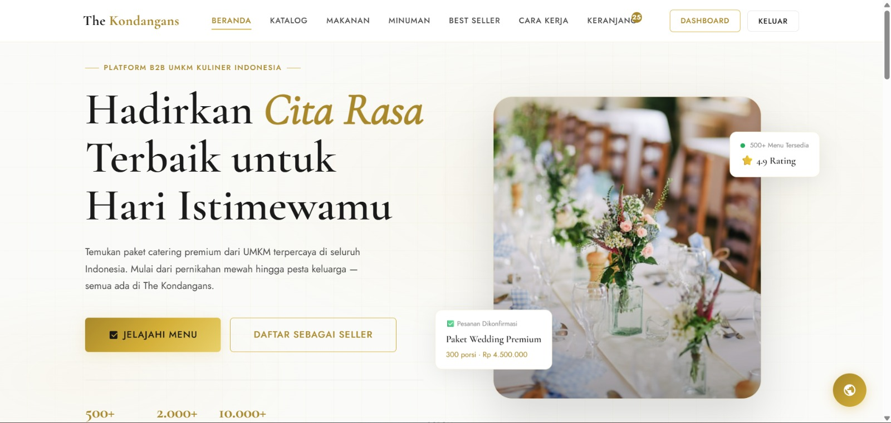
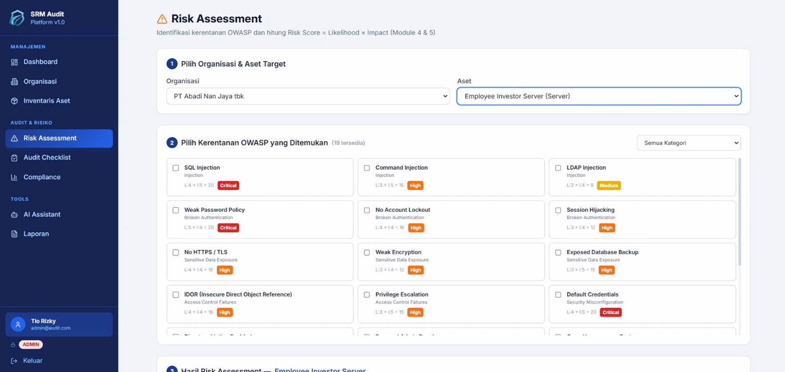
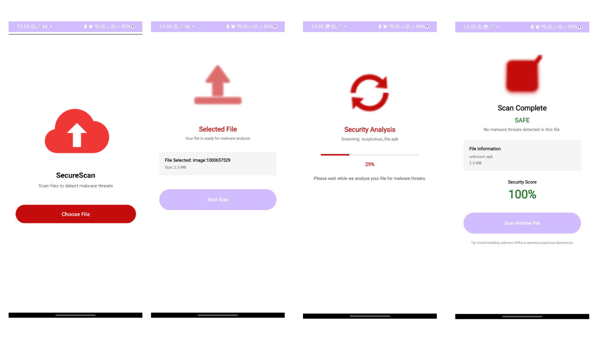

Projects
Things I've Built
Collection of software development, cybersecurity, digital forensic, machine learning, and web application projects that I have built throughout my academic and personal learning journey.
 2026
2026
TinJob
AI-Powered Job Matching Platform
Built an AI-powered job matching platform using React.js and Python featuring swipe-based job discovery, CV screening and scoring, skill gap analysis, and personalized job recommendations based on user profiles.

2026The Kondangans
B2B UMKM Marketplace
Developed a B2B UMKM e-commerce platform designed to connect vendors with customers planning large-scale events. Built using HTML, CSS, JavaScript, and Supabase, the platform also integrated an AI-powered chatbot to assist users with ordering and booking processes more efficiently.

2026AI-Assisted Cybersecurity Risk Assessment Platform
Risk Assessment Platform
Developed a full-stack cybersecurity platform using Python, React.js, and Tailwind CSS with features for security monitoring, vulnerability auditing, and AI-assisted cybersecurity risk assessment. Contributed to both frontend and backend development while improving system usability and functionality.

2025Malware Detection Application
Malware Detector
Developed a malware detection application using C++, Java, and Kotlin with file upload and scanning functionality to identify potentially malicious files. The project focused on improving system interaction, usability, and secure file analysis within a mobile application environment.